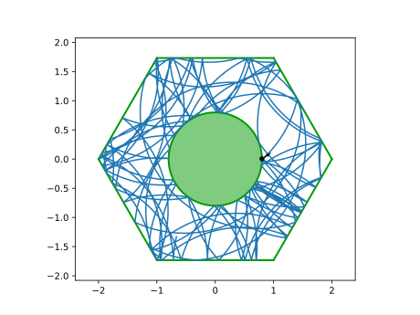

Creating your own Billiard
The Billiard type
DynamicalBilliards.Billiard — TypeBilliard(obstacles...)Construct a Billiard from given obstacles (tuple, vector, varargs).
For functions like boundarymap, it is expected (if possible) that the obstacles of the billiard are sorted, such that the arc-coordinate ξ around the billiard is increasing counter-clockwise.
ξ is measured as:
- the distance from start point to end point in
Walls - the arc length measured counterclockwise from the open face in
Semicircles - the arc length measured counterclockwise from the rightmost point in
Circulars
A Billiard is a wrapper of a Tuple of Obstacles. The abstract Type Obstacle{T} is the supertype of all objects that a particle may collide with, with global billiard precision of type T.
There are many premade functions that construct well-known billiards, like the periodic Sinai billiard. You can find all of them at the Standard Billiards Library.
To create a custom billiard from scratch, it is often convenient to start with an empty Vector{Obstacle{T}}:
using DynamicalBilliards
bd = Obstacle{Float64}[] # T<: AbstractFloatObstacle{Float64}[]and then you create your obstacles one by one and add them to it. All obstacles that are already defined in the package can be found at the Obstacle Library below.
For the example of this page, we will create a hexagonal billiard with a disk in the middle step-by-step (the function billiard_polygon creates a polygonal billiard table already).
The first step is to define the six walls of the billiard table. An InfiniteWall object needs to be supplemented with a start point, an end point, a normal vector and, optionally, a name.
The vertex points of a regular hexagon of radius $r$ are given by the formula:
\[(x,y) = \left( r\cos\left(\frac{2\pi i}{6}\right), r\cos\left(\frac{2\pi i}{6}\right) \right)\,, \quad \text{for i $\in$ \{1,...,6\}}\]
To create each wall object, we will implement the following loop:
hexagon_vertex = (r) -> [ [r*cos(2π*i/6), r*sin(2π*i/6)] for i in 1:6]
hexver = hexagon_vertex(2.0)
for i in eachindex(hexver)
starting = hexver[i]
ending = hexver[mod1(i+1, length(hexver))]
w = ending - starting
normal = [-w[2], w[1]]
wall = InfiniteWall(starting, ending, normal, "wall $i")
push!(bd, wall)
end
summary(bd)"6-element Array{Obstacle{Float64},1}"Because the precision in DynamicalBilliards is measured using eps(T) with T the number type, it is advised to keep the size of the billiard in the order of magnitude of 1. Having overly large billiards with sizes of 100 or more can lead to accuracy loss!
The normal vector of a Wall obstacle is necessary to be supplemented by the user because it must point towards where the particle is expected to come from. If w is the vector (wall) pointing from start- to end-point then the vector [-w[2], w[1]] is pointing to the left of w and the vector [w[2], -[w1]] is pointing to the right. Both are normal to w, but you have to know which one to pick. In this case this is very easy, since the normal has to simply point towards the origin.
In DynamicalBilliards there is no "glue" that combines obstacles or "sticks" them together, ensuring that the billiard is closed. You only have to take care that their ends meet geometrically. Even obstacle overlapping is allowed, if you want to be on the safe side!
We add a disk by specifying a center and radius (and optionally a name):
d = Disk([0,0], 0.8)
push!(bd, d)
# Make the structure required:
billiard = Billiard(bd)Billiard{Float64} with 7 obstacles:
wall 1
wall 2
wall 3
wall 4
wall 5
wall 6
DiskTo make sure the billiard looks as you would expect, use the function plot(bd). Create a particle inside that billiard and evolve it:
using PyPlot
plot(billiard)
ω = 0.5
p = randominside(billiard, ω)
xt, yt, vxt, vyt, t = timeseries!(p, billiard, 100)
plot(xt, yt)
plot(p)
The billiard table now works for straight or magnetic propagation. To expand this to ray-splitting you have to use ray-splitting Obstacles (see the tutorial on Ray-Splitting). Additional information on how to define your own Obstacle sub-type is given in the tutorial on Defining your own Obstacles.
If you make any billiard system that you think is cool and missing from this package, you are more than welcome to submit a PR extending the Standard Billiards Library with your contribution!
Obstacle order
The order that the obstacles are given to the constructor is important for the function boundarymap. For any other functionality it is irrelevant.
Convex Billiards
These 2 types of walls used by DynamicalBilliards that behave differently during evolution:
InfiniteWall: This wall is not actually infinite. It has a starting and ending position. However, when the collision time is calculated, this wall is assumed to be a line (i.e. infinite). This is absolutely fine, as long as the billiards used are convex polygons.SplitterWall,PeriodicWallandRandomWallbehave likeInfiniteWallduring evolution.FiniteWall: This wall is indeed finite in every sense of the word. This means that during collision time estimation, if the collision point that was calculated lies outside of the boundaries of theFiniteWall, then the returned collision time isInf(no collision).FiniteWallis slower thanInfiniteWallfor that reason.
If you wish to create a billiard table that you know will be convex, you should then use InfiniteWalls for faster evolution. Notice that using escapetime requires at least one FiniteWall with field isdoor=true.
Obstacle Library
This is the list of Obstacles you can use when creating your own billiard.
DynamicalBilliards.Obstacle — TypeObstacle{<:AbstractFloat}Obstacle supertype.
Curved
DynamicalBilliards.Disk — TypeDisk{T<:AbstractFloat} <: Circular{T}Disk-like obstacle with propagation allowed outside of the circle (immutable type).
Fields:
c::SVector{2,T}: Center.r::T: Radius.name::String: Some name given for user convenience. Defaults to "Disk".
DynamicalBilliards.RandomDisk — TypeRandomDisk{T<:AbstractFloat} <: Circular{T}Disk-like obstacle that randomly (and uniformly) reflects colliding particles. The propagation is allowed outside of the circle.
Fields:
c::SVector{2,T}: Center.r::T: Radius.name::String: Some name given for user convenience. Defaults to "Random disk".
DynamicalBilliards.Antidot — TypeAntidot{T<:AbstractFloat} <: Circular{T}Disk-like obstacle that allows propagation both inside and outside of the disk (mutable type). Used in ray-splitting billiards.
Fields:
c::SVector{2,T}: Center.r::T: Radius.pflag::Bool: Flag that keeps track of where the particle is currently propagating (pflag= propagation-flag).truestands for outside the disk,falsefor inside the disk. Defaults totrue.name::String: Name of the obstacle given for user convenience. Defaults to "Antidot".
DynamicalBilliards.Semicircle — TypeSemicircle{T<:AbstractFloat} <: Circular{T}Obstacle that represents half a circle. Propagation is allowed only inside the semicircle.
Fields:
c::SVector{2,T}: Center.r::T: Radius.facedir::SVector{2,T}: Direction where the open face of the Semicircle is facing.name::String: Name of the obstacle given for user convenience. Defaults to "Semicircle".
DynamicalBilliards.Ellipse — TypeEllipse{T<:AbstractFloat} <: Obstacle{T}Ellipse obstacle that also allows ray-splitting. The ellipse is always oriented on the x and y axis (although you can make whichever you want the major one).
Fields:
c::SVector{2,T}: Center.a::T: x semi-axis.b::T: y semi-axis.pflag::Bool: Flag that keeps track of where the particle is currently propagating.true(default) is associated with being outside the ellipse.name::String: Some name given for user convenience. Defaults to"Ellipse".
The ellipse equation is given by
\[\left(\frac{x - c[1]}{a} \right)^2+ \left(\frac{y - c[2]}{b}\right)^2 = 1\]
Lines
DynamicalBilliards.Wall — TypeWall{T<:AbstractFloat} <: Obstacle{T}Wall obstacle supertype.
All Wall subtypes (except PeriodicWall) can be called as Wall(sp, ep), in which case the normal vector is computed automatically to point to the left of v = ep - sp.
DynamicalBilliards.InfiniteWall — TypeInfiniteWall{T<:AbstractFloat} <: Wall{T}Wall obstacle imposing specular reflection during collision (immutable type). Faster than FiniteWall, meant to be used for convex billiards.
Fields:
sp::SVector{2,T}: Starting point of the Wall.ep::SVector{2,T}: Ending point of the Wall.normal::SVector{2,T}: Normal vector to the wall, pointing to where the particle will come from before a collision (pointing towards the inside of the billiard). The size of the vector is irrelevant since it is internally normalized.name::String: Name of the obstacle, given for user convenience. Defaults to "Wall".
DynamicalBilliards.RandomWall — TypeRandomWall{T<:AbstractFloat} <: Wall{T}Wall obstacle imposing (uniformly) random reflection during collision (immutable type).
Fields:
sp::SVector{2,T}: Starting point of the Wall.ep::SVector{2,T}: Ending point of the Wall.normal::SVector{2,T}: Normal vector to the wall, pointing to where the particle is expected to come from (pointing towards the inside of the billiard).name::String: Name of the obstacle, given for user convenience. Defaults to "Random wall".
DynamicalBilliards.PeriodicWall — TypePeriodicWall{T<:AbstractFloat} <: Wall{T}Wall obstacle that imposes periodic boundary conditions upon collision (immutable type).
Fields:
sp::SVector{2,T}: Starting point of the Wall.ep::SVector{2,T}: Ending point of the Wall.normal::SVector{2,T}: Normal vector to the wall, pointing to where the particle will come from (to the inside the billiard). The size of the vector is important! This vector is added to a particle'sposduring collision. Therefore the size of the normal vector must be correctly associated with the size of the periodic cell.name::String: Name of the obstacle, given for user convenience. Defaults to "Periodic wall".
DynamicalBilliards.SplitterWall — TypeSplitterWall{T<:AbstractFloat} <: Wall{T}Wall obstacle imposing allowing for ray-splitting (mutable type).
Fields:
sp::SVector{2,T}: Starting point of the Wall.ep::SVector{2,T}: Ending point of the Wall.normal::SVector{2,T}: Normal vector to the wall, pointing to where the particle will come from before a collision. The size of the vector is irrelevant.pflag::Bool: Flag that keeps track of where the particle is currently propagating (pflag= propagation flag).trueis associated with thenormalvector the wall is instantiated with. Defaults totrue.name::String: Name of the obstacle, given for user convenience. Defaults to "Splitter wall".
DynamicalBilliards.FiniteWall — TypeFiniteWall{T<:AbstractFloat} <: Wall{T}Wall obstacle imposing specular reflection during collision (immutable type). Slower than InfiniteWall, meant to be used for non-convex billiards.
Giving a true value to the field isdoor designates this obstacle to be a Door. This is used in escapetime function. A Door is a obstacle of the billiard that the particle can escape from, thus enabling calculations of escape times.
Fields:
sp::SVector{2,T}: Starting point of the Wall.ep::SVector{2,T}: Ending point of the Wall.normal::SVector{2,T}: Normal vector to the wall, pointing to where the particle will come from before a collision (pointing towards the inside of the billiard). The size of the vector is irrelevant since it is internally normalized.isdoor::Bool: Flag of whether thisFiniteWallinstance is a "Door". Defaults tofalse.name::String: Name of the obstacle, given for user convenience. Defaults to "Finite Wall".
In addition, translate is a helpful function:
DynamicalBilliards.translate — Functiontranslate(obst::Obstacle, vector)Create a copy of the given obstacle with its position translated by vector.